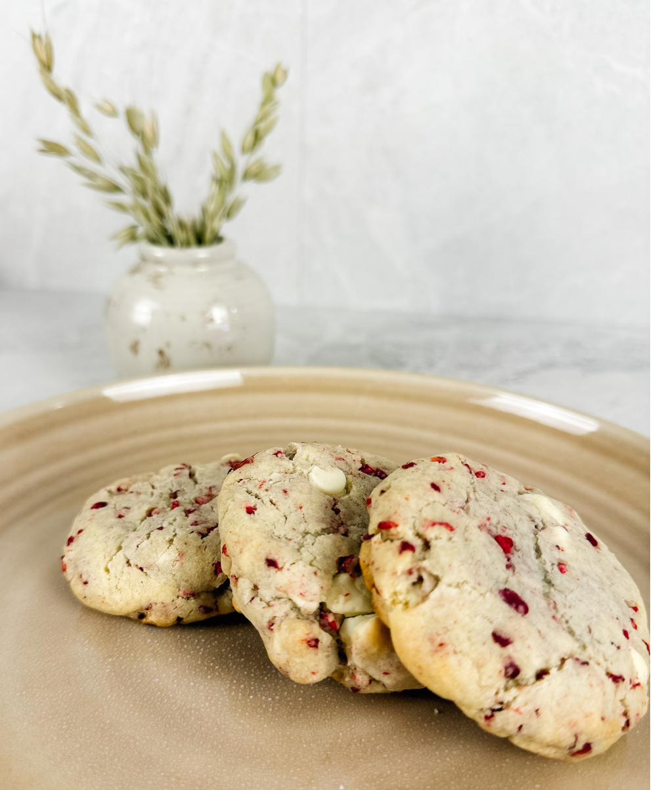
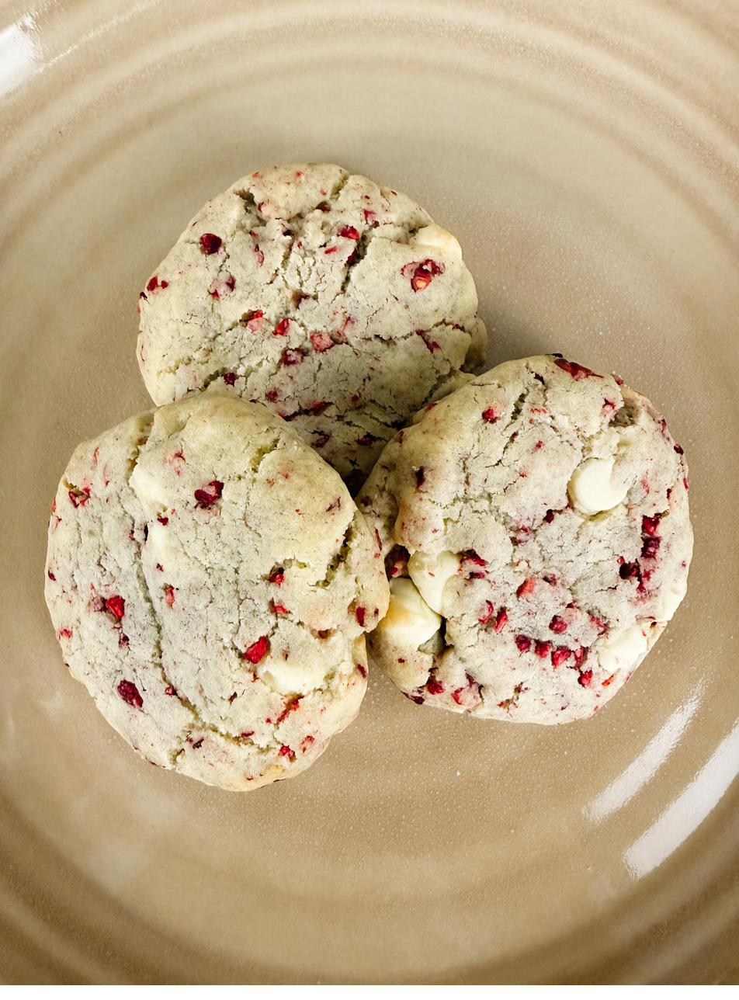

Crisp at the edge, soft in the middle, and pink all the way through.

Fresh raspberries seem like the obvious choice here, and they are the wrong one — they carry too much water and turn the dough grey and slack. Freeze-dried raspberries do what fresh cannot: all of the flavor, none of the moisture, and those bright pink flecks that stay put through the oven.
Crush them lightly and no further. Ground to powder they tint the whole dough an even pink, which looks manufactured. Left in rough pieces, they scatter.
The wet
The dry
The folding in
Chop white chocolate from a bar rather than reaching for chips. Chips are formulated to hold their shape; a chopped bar melts into soft creamy pockets, which is the whole point here.

After chilling, scoop the dough into balls and freeze them solid on a tray, then move them to a bag. Bake straight from frozen, adding a minute or two. Press on a few fresh pieces before they go in and no one will know they were ever in the freezer.
“The pink is the part people notice first. It only stays that way if you leave the raspberries alone.”